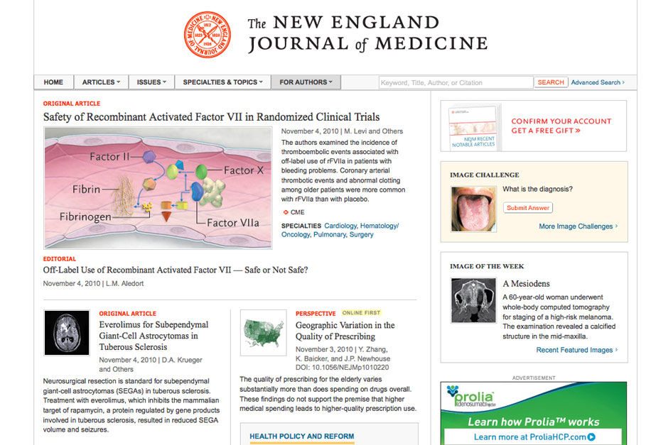
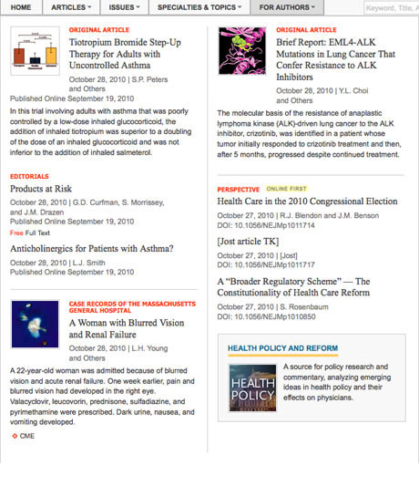
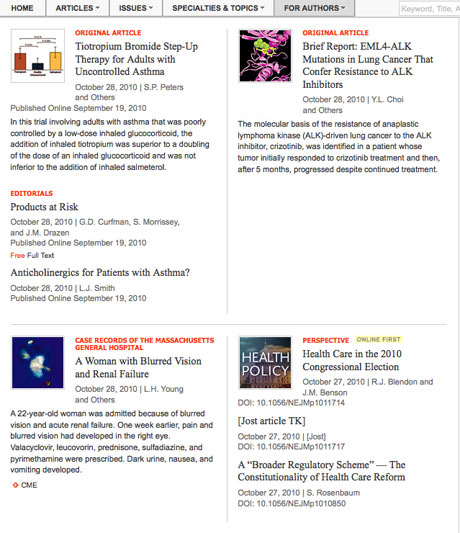

Information About —
The New England Journal of Medicine
  
Published online version of weekly scholarly medical research journal The New England Journal of Medicine. Made layout for home page and medical specialties pages (hubs). Created new HTML/CSS layouts to solve white space problems. Published the two interactive widgets on the right rail: the Image Challenge and the Image of the Week. Published special articles in advance of weekly deadlines, to correlate with medical conferences, as directed by editors.
EXCERPTS — First
Sample home page, showing interactive widgets on right rail.
EXCERPTS — Second
New vertical layout I invented for NEJM, vs. old horizontal layout with awkward white space.